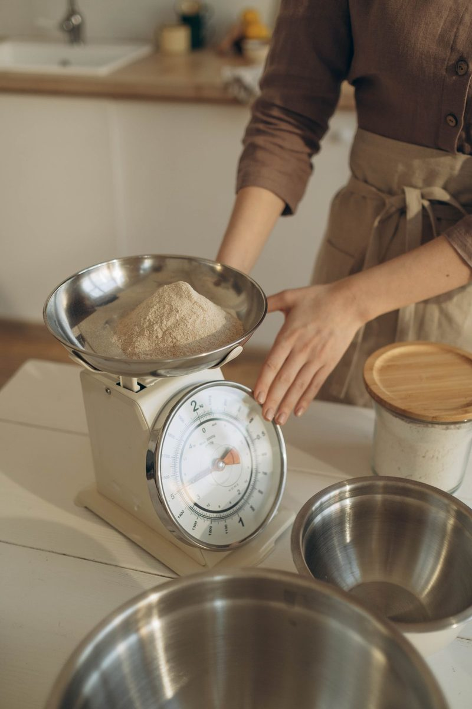

Consejo 1: Medir los ingredientes correctamente
Es importante medir los ingredientes con precisión para obtener los mejores resultados en tus recetas. Utiliza tazas y cucharas medidoras para asegurarte de que estás agregando la cantidad correcta de cada ingrediente.
